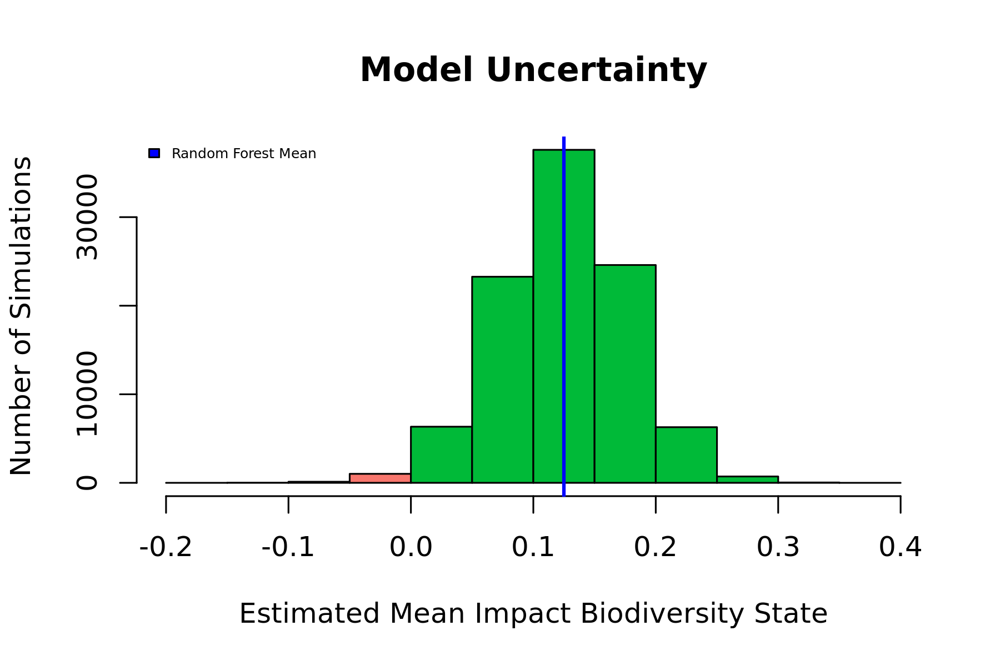
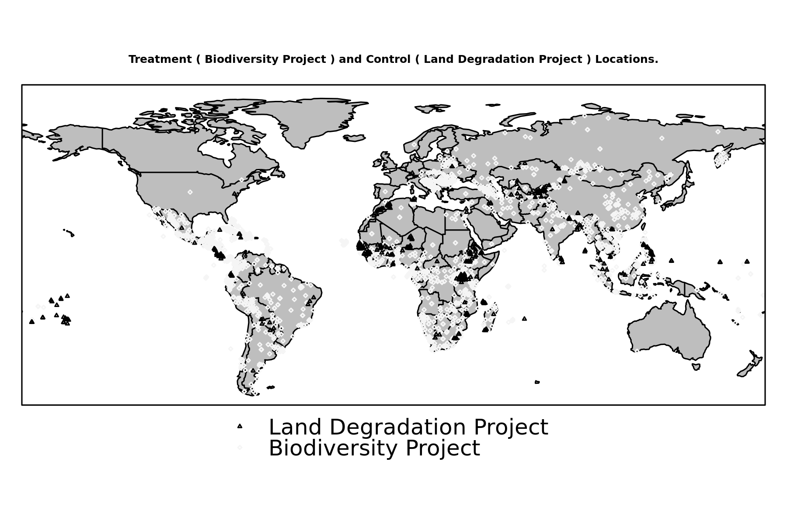
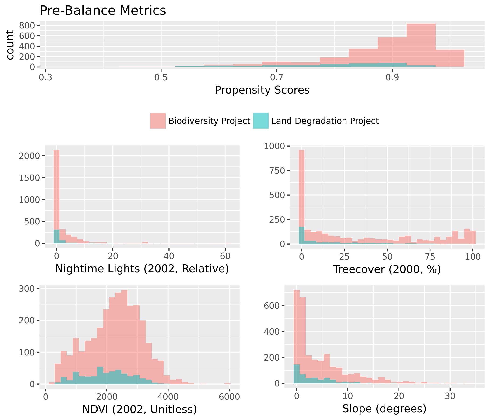
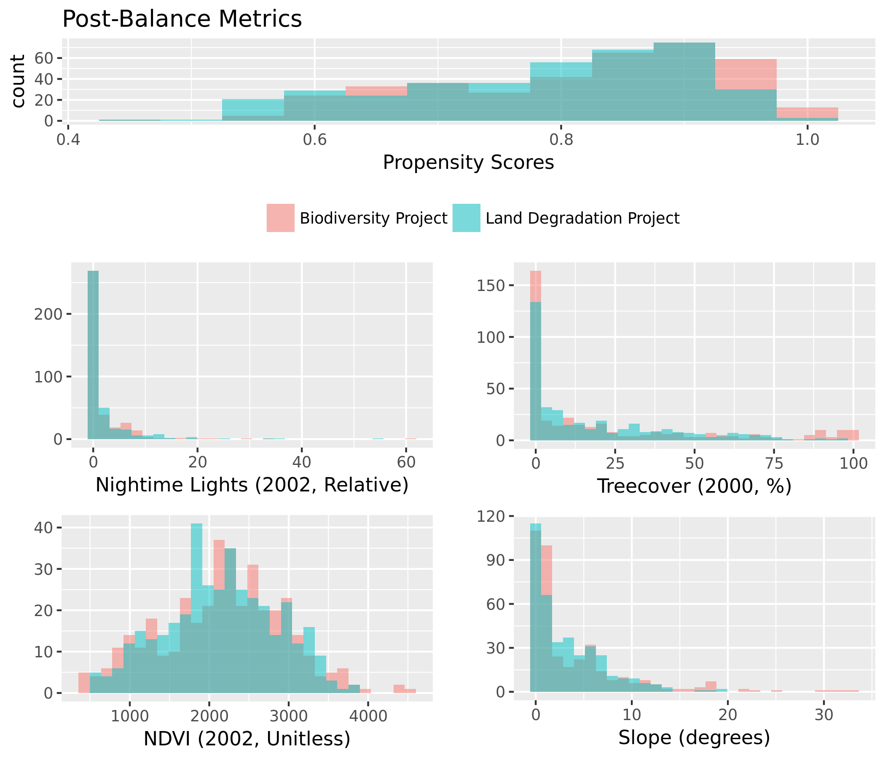
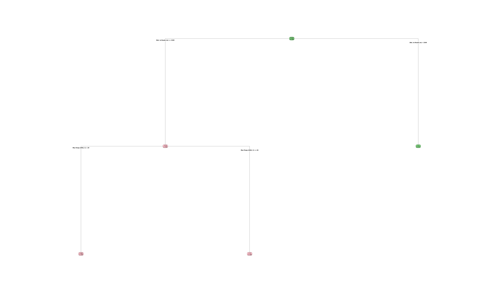
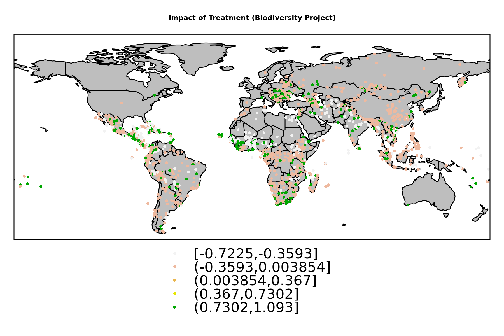
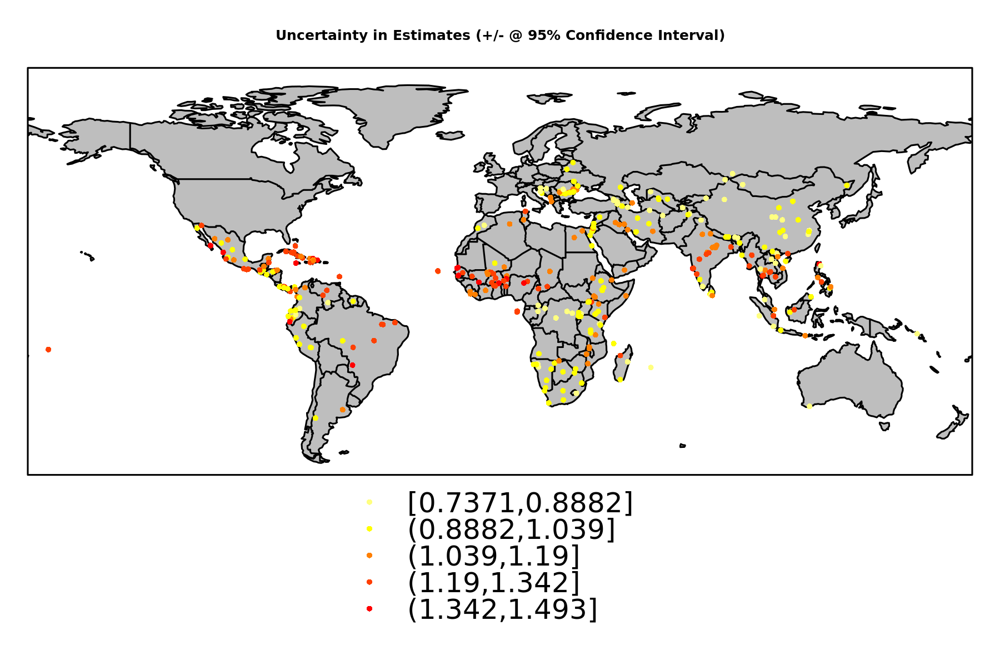

Contrast: Biodiversity Project (Treated), Land Degradation Project (Control)
Treatment Cases:
3095
Control Cases:
446

Figure 1. Mean Estimated Impacts from Causal Tree and Random Forest Estimation Strategies.
In this illustration, the blue vertical line is the global estimate of impact from the random forest.
The range of uncertainty is illustrated using a histogram, indicating the proportion of simulations which result in positive or negative estimates.
Specific confidence intervals can be calculated for this global estimate, or for individual project locations. A map of project location uncertainties is presented below.
Descriptive Statistics for Biodiversity Project (Treated) |
| Statistic | Mean | St. Dev. | Min | Median | Max |
|
| Dist. to Rivers (m) | 122,487.80 | 1,207,524.00 | 0.00 | 2,158.41 | 15,938,094.00 |
| Dist. to Roads (m) | 14,698.97 | 83,130.17 | 0.00 | 3,000.00 | 2,967,640.00 |
| Elevation (m) | 773.60 | 906.21 | -373.00 | 407.02 | 5,608.00 |
| Slope (degrees) | 4.57 | 5.48 | 0.00 | 2.11 | 34.39 |
| Urb. Dist. (rel) | 478.13 | 629.11 | 5.00 | 261.00 | 6,474.00 |
| Pop. Density (2000) | 135.20 | 497.05 | 0.00 | 31.88 | 13,896.25 |
| Protected Area % | 0.52 | 0.58 | 0 | 0 | 4 |
| Treecover (2000, %) | 34.71 | 36.32 | 0.00 | 18.95 | 100.00 |
| Latitude | 13.39 | 22.02 | -54.50 | 13.50 | 75.54 |
| Longitude | 5.83 | 73.25 | -175.16 | 19.69 | 179.14 |
| Max Precip. (2002, mm) | 255.91 | 175.11 | 0.75 | 227.35 | 2,135.65 |
| Min Precip (2002, mm) | 17.73 | 30.93 | 0.00 | 4.10 | 284.40 |
| Mean Precip (2002, mm) | 104.82 | 77.30 | 0.09 | 88.43 | 609.35 |
| Max Temp (2002, C) | 24.73 | 5.33 | 1.20 | 25.80 | 38.55 |
| Min Temp (2002, C) | 13.11 | 13.31 | -41.70 | 18.20 | 34.85 |
| Mean Temp (2002, C) | 19.42 | 8.16 | -15.10 | 22.16 | 36.48 |
| Nightime Lights (2002, Relative) | 2.67 | 7.00 | 0.00 | 0.00 | 60.94 |
| NDVI (2002, Unitless) | 2,257.45 | 885.09 | 188.89 | 2,335.07 | 5,931.87 |
| Biodiversity Project | 1.00 | 0.00 | 1 | 1 | 1 |
| Biodiversity State | -1.49 | 1.18 | -3 | -1 | 0 |
|

Propensity Model: Biodiversity Project (Treated), Land Degradation Project (Control) |
| Dependent variable: |
| |
| treatment |
|
| Dist. to Rivers (m) | -0.0000** (-0.0000, -0.0000) |
| Dist. to Roads (m) | 0.0000 (-0.0000, 0.0000) |
| Elevation (m) | -0.0001 (-0.0003, 0.0002) |
| Slope (degrees) | -0.002 (-0.04, 0.03) |
| Urb. Dist. (rel) | 0.001*** (0.0003, 0.001) |
| Pop. Density (2000) | -0.0001 (-0.0004, 0.0001) |
| Protected Area % | 0.04 (-0.14, 0.23) |
| Treecover (2000, %) | 0.02*** (0.01, 0.02) |
| Latitude | -0.01*** (-0.02, -0.003) |
| Longitude | -0.004*** (-0.01, -0.002) |
| Max Precip. (2002, mm) | -0.003*** (-0.005, -0.001) |
| Min Precip (2002, mm) | -0.02*** (-0.03, -0.01) |
| Mean Precip (2002, mm) | 0.01*** (0.01, 0.02) |
| Max Temp (2002, C) | 0.13* (-0.002, 0.26) |
| Min Temp (2002, C) | 0.03 (-0.07, 0.12) |
| Mean Temp (2002, C) | -0.22* (-0.45, 0.003) |
| Nightime Lights (2002, Relative) | 0.04*** (0.01, 0.07) |
| NDVI (2002, Unitless) | 0.0002** (0.0000, 0.0004) |
| Constant | 1.54** (0.33, 2.75) |
|
| Observations | 2,985 |
| Akaike Inf. Crit. | 2,033.25 |
|
| Note: | *p<0.1; **p<0.05; ***p<0.01 |


Percent Balance Improvement: |
| Mean Diff. | eQQ Med | eQQ Mean | eQQ Max |
|
| Propensity Score | 73.802 | 73.114 | 73.762 | 83.947 |
| Dist. to Rivers (m) | -14.714 | -4.033 | -29.772 | 0.445 |
| Dist. to Roads (m) | -1,145.372 | 18.952 | 49.436 | 91.758 |
| Elevation (m) | 74.363 | 36.311 | 40.411 | -6.727 |
| Slope (degrees) | 61.097 | 19.130 | 36.830 | 8.633 |
| Urb. Dist. (rel) | 34.745 | 19.529 | 33.268 | 0 |
| Pop. Density (2000) | 6.753 | 24.141 | 19.139 | 33.428 |
| Protected Area % | 37.035 | 0 | -1.075 | 0 |
| Treecover (2000, %) | 81.696 | 90.238 | 73.119 | 35.037 |
| Latitude | -56.250 | 59.214 | 42.980 | 23.456 |
| Longitude | 91.809 | -6.427 | 19.470 | 3.232 |
| Max Precip. (2002, mm) | 32.199 | -63.962 | -45.565 | 0 |
| Min Precip (2002, mm) | 48.012 | 94.393 | 23.125 | 0 |
| Mean Precip (2002, mm) | 89.851 | 61.555 | 42.970 | 0 |
| Max Temp (2002, C) | 86.183 | 85.768 | 72.009 | 38.281 |
| Min Temp (2002, C) | 58.422 | 78.125 | 56.879 | 56.801 |
| Mean Temp (2002, C) | 67.186 | 80.072 | 66.652 | 39.272 |
| Nightime Lights (2002, Relative) | 83.790 | 7.169 | 40.330 | 73.470 |
| NDVI (2002, Unitless) | 92.311 | 79.240 | 71.809 | 67.142 |
|

Matched Model: Biodiversity Project (Treated), Land Degradation Project (Control) |
| Dependent variable: |
| |
| Biodiversity State |
|
| treatment | 0.07** (0.005, 0.14) |
| Dist. to Rivers (m) | -0.10** (-0.19, -0.02) |
| Dist. to Roads (m) | 0.16*** (0.09, 0.23) |
| Elevation (m) | 0.15** (0.03, 0.27) |
| Slope (degrees) | -0.08 (-0.18, 0.02) |
| Urb. Dist. (rel) | -0.01 (-0.09, 0.08) |
| Pop. Density (2000) | 0.05 (-0.05, 0.14) |
| Protected Area % | 0.01 (-0.06, 0.09) |
| Treecover (2000, %) | 0.05 (-0.05, 0.15) |
| Latitude | -0.002 (-0.11, 0.10) |
| Longitude | -0.19*** (-0.27, -0.10) |
| Max Precip. (2002, mm) | 0.02 (-0.19, 0.24) |
| Min Precip (2002, mm) | 0.18** (0.02, 0.35) |
| Mean Precip (2002, mm) | -0.22 (-0.53, 0.09) |
| Max Temp (2002, C) | -0.46** (-0.84, -0.07) |
| Min Temp (2002, C) | -1.32*** (-1.98, -0.65) |
| Mean Temp (2002, C) | 1.48*** (0.55, 2.40) |
| Nightime Lights (2002, Relative) | -0.03 (-0.12, 0.07) |
| NDVI (2002, Unitless) | 0.11** (0.02, 0.19) |
| Dist. to Roads (m) *Treatment | 0.003 (-0.07, 0.07) |
| Max Temp (2002, C) *Treatment | 0.04 (-0.03, 0.11) |
| Nightime Lights (2002, Relative) *Treatment | -0.02 (-0.09, 0.06) |
| Constant | 0.001 (-0.07, 0.07) |
|
| Observations | 760 |
| R2 | 0.12 |
| Adjusted R2 | 0.09 |
|
| Note: | *p<0.1; **p<0.05; ***p<0.01 |
Standardized Beta Coefficients for Linear Model with Heterogeneous Effects

